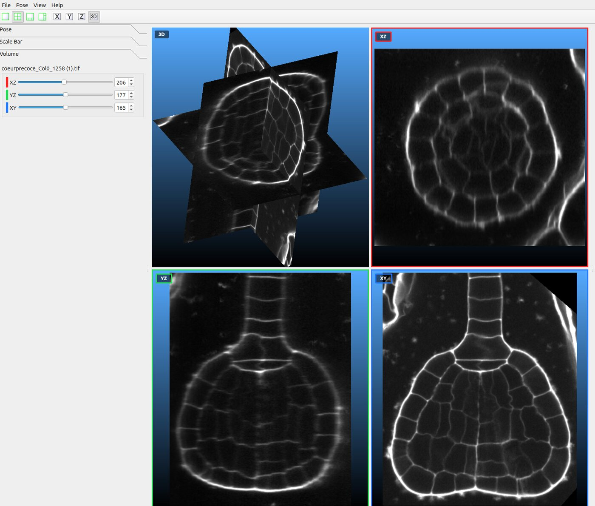
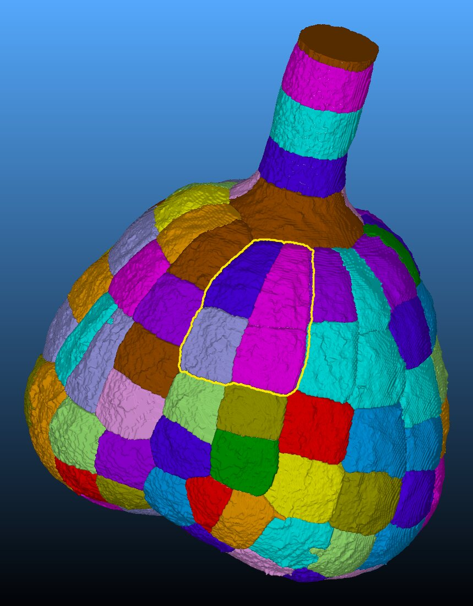
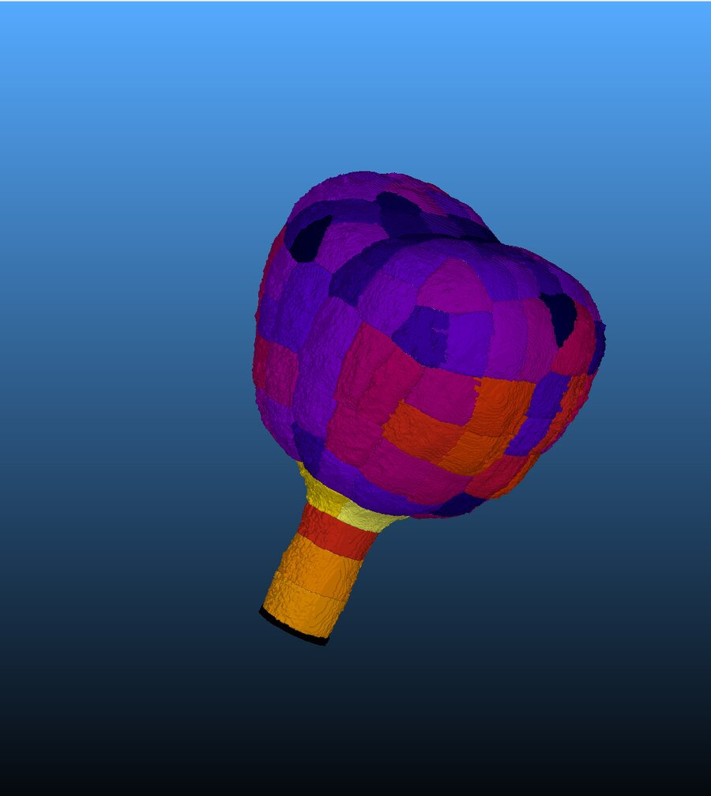
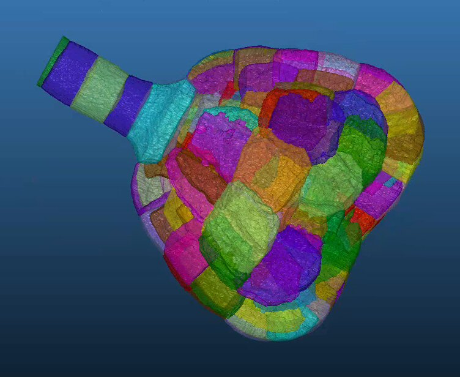
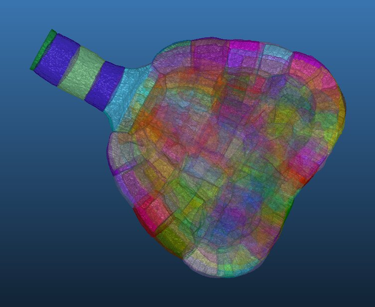
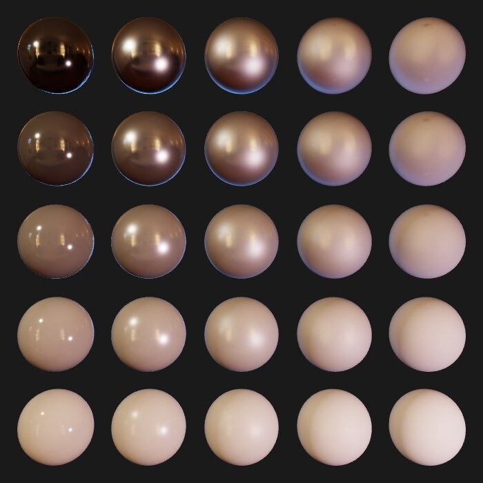
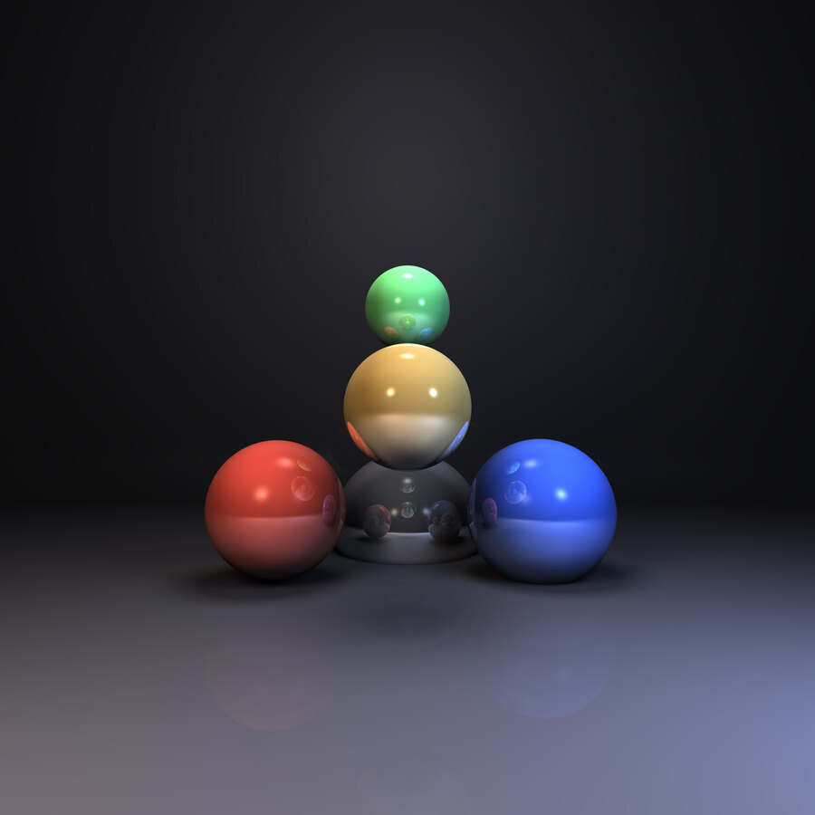

SViewer
Stage de fin d'études à l'INRAE (Institut Jean-Pierre Bourgin), Versailles, avril à septembre 2026
Le logiciel libre que les biologistes de l'institut utilisent pour regarder l'intérieur de tissus végétaux : le volume brut issu du microscope confocal et les maillages des cellules segmentées. J'en étais le seul développeur pendant six mois, et chaque fonctionnalité passait en revue de code avant d'être intégrée. Le code est hébergé sur la forge de l'INRAE, d'où des captures plutôt que des liens.
- C++20
- OpenGL 3.3
- GLSL
- Qt Widgets
- Linux et Windows
- Moteur de rendu migré du pipeline fixe OpenGL 1.x vers OpenGL 3.3 programmable, un type d'objet à la fois.
- 130 millions de voxels par volume et jusqu'à 1,4 million de points par maillage, sur les données réelles de l'équipe.
- Rendu volumique multithreadé, dont la qualité baisse pendant la manipulation et remonte à l'arrêt.
- Environ 10 000 lignes en plus de 50 commits, et un manuel utilisateur de 15 chapitres en anglais.





Majeure IMAGE
Projets de cours à l'EPITA. Les sujets servent encore aux promotions suivantes : je montre les rendus, pas le code.

